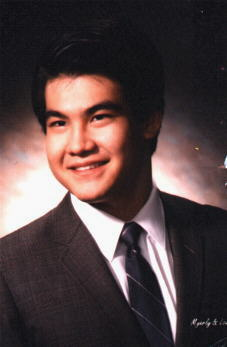
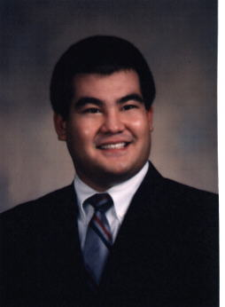

|
Dave Robel |
 
Gringar is played by Dave Robel, a medical school student at the University of Maryland Medical School. Gringar
was first dragged into Sneezy 3.0 by a group of friends at Mount Saint Mary's College. It was here that he learned
just how easy one could die. After learning that one should con creatures before attempting to kill them and not
to mess with those cats in Brightmoon, he began to progress somewhat through the levels as Zandar the mage, Randal
the paladin, and Randolf the cleric. However, none of these characters ever made it to stardom. In fact they had
a very difficult time to make it past Level 15. In fact, it wasn't until 4.0 that the great monk Gringar was born.
It was here that, after years of honing his skills, he began to rise in the levels and to vanquish his foes. This
was also the time that he met many players who finally realized his potential and became friends with him. Finally,
in 4.1, Gringar achieved his hard fought goal of becoming 50th and finally immorted. Since immorting, he can be
caught on Sneezy claiming he is working on some new project for the new and exciting 4.5 version of Sneezy and
chatting with those who will put up with his craziness.
Oustide of the world of Sneezy, Dave can be found studying like a madman in the hopes to one day be a doctor. On
his free time, he enjoys swimming, hiking, going to dance clubs, or just hanging out. He also enjoys listening
to music (pretty much anything imaginable) and sleeping (a highly desired pastime of his which he gets very little
of). Gringar is also related to Moath, played by his younger brother Dan. The two of them can be seen fighting
it out at times to see who is the stronger (after all, THERE CAN BE ONLY ONE). Too bad, Gringar ends up silenced,
binded, and charmed. Oh well, one day he'll learn not to pick on those frail mages.